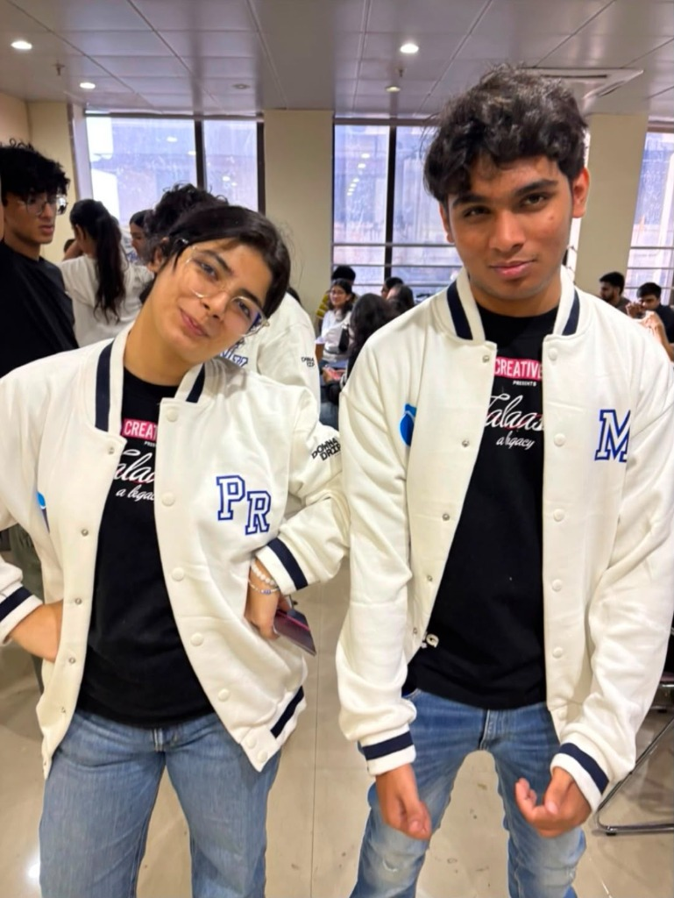
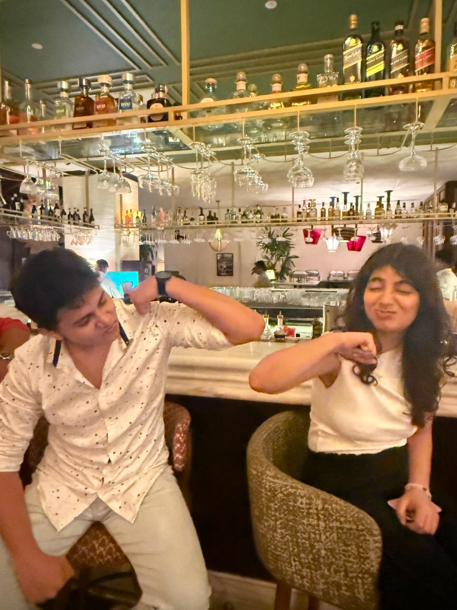
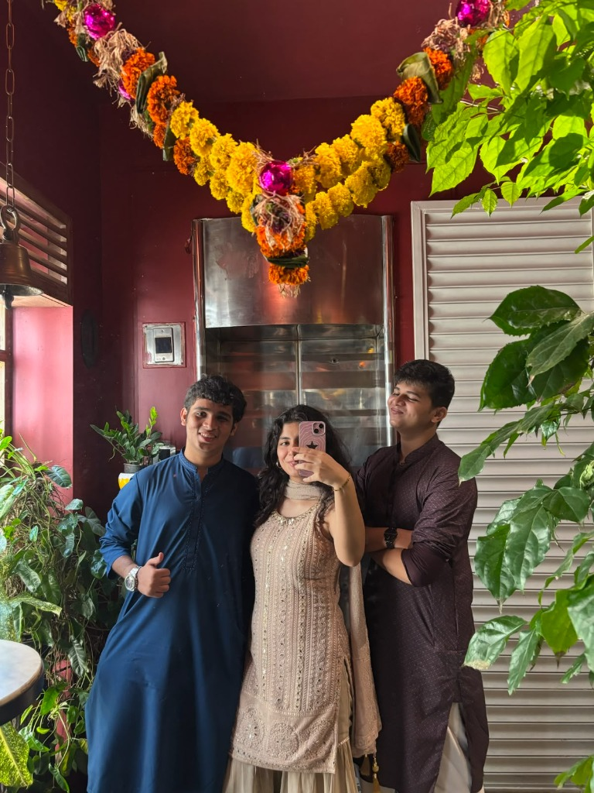

hi, i’m Pavitra!
i made this website as a way to keep my creative side awake, and i’m glad you’re taking a minute to get to know me a little better.
in a nutshell: i’m a digital strategy student at Jai Hind College, Mumbai. i started out in ad operations at JioHotstar, and these days i work in digital ad sales.
outside of that i play guitar and post covers, drink more coffee than i should, and share a flat with a black cat who has opinions about all of it. i’m a morning person, which nobody believes until they see the timestamps.
i sit at the intersection of analytics and creativity — turning audience insights into campaigns that actually resonate. when i’m not optimising ad flows, i’m thinking about what makes people stop scrolling.
the five things i keep circling back to are media, analytics, advertising, strategy, and mumbai — the city that taught me most of what i know about attention.
i think the best ideas look like instinct, but are built on data. that’s the whole idea behind this site, really.
if something here sparks a thought — a collaboration, a campaign, or just a good book — send it my way.
with love,
Pavitra



move pictures to read
“The best ideas look like instinct, but are built on data.”